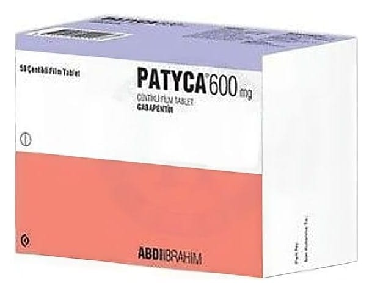

Patyca 600 mg Centıklı Film Tablet , 50 Tablet

Ne için kullanılır
KT · Bölüm 1• PATYCA diğer antiepileptik ilaçlar olarak adlandırılan ilaç grubundandır. Bu ilaçlar sara (epilepsi) ve sinir dokusunun hasarına bağlı ağrı (nöropatik ağrı) tedavisinde kullanılır. • PATYCA 600 mg çentikli film tablet, 50 çentikli film tablet içeren ambalajlarda bulunur, her tablet 600 mg gabapentin içermektedir. Çentik, tabletin 2 eşit parçaya bölünmesini kolaylaştırmaktadır. • PATYCA başlangıçta beynin belirli kısımlarıyla sınırlı olan ve beynin diğer taraflarına yayılıp yayılmadığı belli olmayan değişik türlerdeki sara (epilepsi) nöbetlerinde kullanılır. Mevcut tedavi yeterli olmadığında, doktorunuz size ve 6 yaşından daha büyük olan çocuğunuza PATYCA reçete edebilir. Doktor aksini belirtmedikçe, siz veya 6 yaşından büyük çocuğunuz tarafından mevcut tedaviye ek olarak PATYCA kullanı lmalıdır. Ayrıca PATYCA 12 yaş üzeri çocukları ve yetişkinleri tedavi etmek için
tek başına kullanılabilir. • PATYCA, s inir dokusunun hasarına bağlı ağrı (nöropatik ağrı) tedavisinde kullanılan bir ilaçtır. Ağrı hissi; sıcak, yakıcı, zonklama, çarpıntı, ateş, bıçak saplanması hissi gibi, acı, kramp girmesi, ağrı, karıncalanma, hissizlik, uyuşma, batma ve donma gibi çeşitli şekillerde tanımlanabilir.